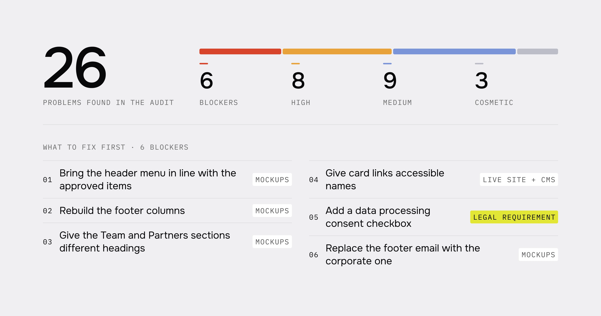
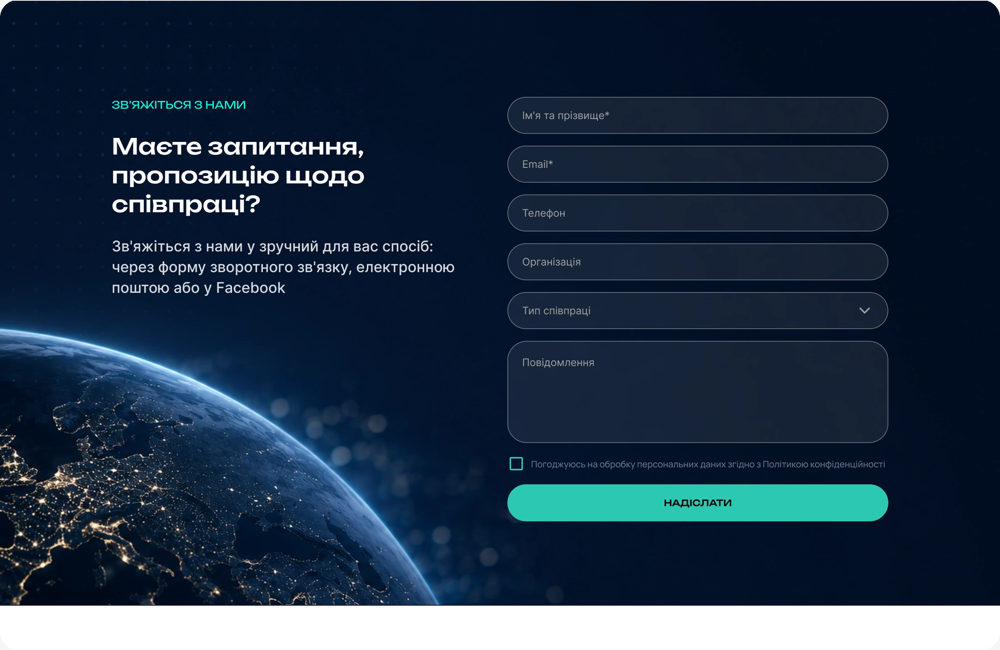

Il sito deve aiutare a capire l'organizzazione e il suo lavoro
La Open Data Association (ODA) lavora con i dati aperti, i progetti anticorruzione e la formazione. Per un potenziale partner il sito deve rispondere a domande precise: di cosa si occupa l'organizzazione, quali progetti realizza, con chi collabora e come contattarla.
All'inizio c'erano un sito su Wix, i primi mockup di tre pagine e testi approvati. Il mio compito era mettere d'accordo questi materiali e portare il design fino alla consegna allo sviluppo.
26 problemi – e un ordine di lavoro chiaro
Ho messo a confronto il sito esistente, i mockup e la matrice dei contenuti. Ho rilevato 26 problemi, 6 dei quali con la priorità più alta.
Tre cose incidevano di più sulla struttura e sull'interazione:
- La navigazione non corrispondeva ai contenuti. Header e footer avevano set di voci diversi e una parte dei link era duplicata.
- 16 link non avevano un nome accessibile. Con uno screen reader le card dei progetti e del blog non si distinguevano per nome.
- Il form andava rivisto. Nei primi mockup mancavano la checkbox di consenso approvata e gli stati di interazione.
L'audit ha fissato le priorità: prima la struttura, l'accesso ai contenuti e il form, poi la coerenza dei componenti e i dettagli visivi.

Quali informazioni servono a un potenziale partner
Nella matrice dei contenuti restavano aperte tre domande che bloccavano l'approvazione della struttura: cosa deve stare nella sezione «Risorse», se al sito serva la trasparenza finanziaria e come raggruppare i progetti. Le ho portate su sette organizzazioni ucraine e internazionali che lavorano con i dati aperti e il controllo civico, guardando cosa ciascuna tiene nella navigazione di primo livello.
| Organizzazione | Report annuali | Finanze, donatori | Organi di governo | Categorie del filtro |
|---|---|---|---|---|
| Transparency International Ukraine | Sì | Sì | Sì | 6 |
| Centro d'azione anticorruzione | Sì | Sì | — | 8 |
| CEDEM | Sì | — | Sì | 3 |
| RISE Ukraine | — | — | Sì | 4 |
| Open Contracting Partnership | Sì | Sì | — | ~10 + 7 |
| Open Data Institute | In Key documents | — | Sì | 4 |
| Open Knowledge Foundation | — | Sì, Funders | Sì | 5 |
I report annuali sono in navigazione in cinque organizzazioni su sette, le finanze o l'elenco dei donatori in quattro, gli organi di governo in quattro. Il raggruppamento per tema è usato in tutte e sette: nessuna ordina i progetti per data o per donatore, quindi il principio scelto nel mockup era giusto.
La differenza è emersa nel numero di categorie del filtro: da tre a otto in sei organizzazioni su sette, tutte su una sola riga. Nel mockup erano tredici, perciò i tab andavano scorsi con le frecce.
Da qui è uscito cosa deve contenere il sito: donatore, periodo e stato del progetto, report e documenti, un percorso chiaro verso la collaborazione. A parte, ho proposto di aggiungere alle informazioni sull'organizzazione gli organi di governo e i documenti costitutivi.
Costruire la navigazione attorno a una struttura chiara
- Problema
- Il menu mescolava le sezioni della home con pagine separate e il footer duplicava i link.
- Decisione
- Ho progettato la home con navigazione ad ancore. Blog, articoli, report e privacy policy hanno ricevuto pagine proprie. I dettagli del progetto si aprono in una finestra modale.
- Cosa è cambiato
- Per ogni tipo di contenuto è definito dove sta e come ci si arriva. Nel progetto le informazioni chiave – donatore, periodo, aree e stato – stanno prima della descrizione estesa.

Separare la navigazione tra i progetti dai loro tag
- Problema
- Nei materiali sei progetti avevano 13 etichette diverse. Usarle tutte nel filtro sovraccaricava la navigazione.
- Decisione
- Nell'interfaccia finale il filtro ha cinque tab, «Tutti i progetti» compreso. Le caratteristiche di dettaglio restano come tag sulle card.
- Sviluppo successivo
- Ho proposto di legare il filtro alle quattro aree strategiche dell'organizzazione. Così il set di categorie resta stabile man mano che i progetti crescono.

Allineare la call to action allo scenario di collaborazione
- Problema
- Il pulsante «Sostieni» poteva far pensare a una donazione, mentre il form serve per le richieste di collaborazione.
- Decisione
- Ho usato «Partecipa» come passaggio al form. Ho previsto la scelta del tipo di collaborazione, il consenso al trattamento dei dati e messaggi di errore comprensibili.
- Cosa è cambiato nel design
- Il pulsante corrisponde al passo successivo e il form ha stati definiti per i campi, la checkbox e il focus. Gli errori sono spiegati a testo accanto al campo.

La home blocco per blocco, il blog e un articolo
La home è una sola pagina con nove sezioni-ancora. Qui sotto due di esse: quella che imposta i percorsi nel sito e quella in cui dovrebbe confluire il filtro dei progetti.


Blog e articoli sono pagine CMS separate. L'elenco si filtra per categoria; su mobile il filtro si richiude in un menu a tendina. Ogni articolo è costruito su un unico template: la categoria nelle briciole di pane, data e tempo di lettura, copertina, blocco citazione, fonti e «Leggi anche».


Dalla verifica del contrasto ai requisiti di interazione
Ho verificato 21 coppie di colori. In base ai risultati ho cambiato due token e ne ho aggiunti tre nuovi per didascalie, errori e bordi dei campi.
- 4.67:1AA
didascalie sullo sfondo grigio
- 4.80:1AA
testo di errore su fondo scuro
- 3.12:1AA
bordo del campo del form
A parte, ho preparato 12 requisiti per lo sviluppo: focus visibile, nomi accessibili delle card, navigazione da tastiera, controllo del movimento e messaggi testuali del form.

Regole uniche per le pagine e per i nuovi contenuti
Ho messo insieme variabili di colore semantiche, 25 stili di testo, spaziature e componenti con i loro stati. I blocchi delle pagine li ho preparati per Desktop, Tablet e Mobile.
Per il CMS ho descritto la struttura dei contenuti e i collegamenti tra le collezioni. Per il team dell'organizzazione ho preparato tre istruzioni per creare le immagini: copertine degli articoli, illustrazioni dei progetti e ritocco delle foto delle persone.
Questo dà una base per far crescere il sito mantenendo uno stile coerente.

Cosa è uscito e cosa non ho verificato
Il sito è online su opendataassociation.org. Progetti, notizie e report il team li aggiunge da solo tramite il CMS – la struttura per farlo l'ho prevista nel design.
La parte difficile non è stata disegnare le pagine, ma mettersi d'accordo sui contenuti: cosa sta esattamente sulla card di un progetto, quali stati può avere, cosa vede una persona quando il form non parte. I contenuti sono stati concordati con l'avvocata, perciò una parte delle decisioni è un compromesso tra ciò che si legge bene e ciò che l'organizzazione ha il diritto di scrivere.
Cosa non ho verificato: gli scenari realizzati con tastiera e screen reader. Il contrasto l'ho calcolato sui mockup, non sul sito sviluppato, e lo sviluppo non l'ho fatto io – quindi tra i miei requisiti e il risultato può esserci una differenza. È la prima cosa che verificherei se tornassi su questo progetto.